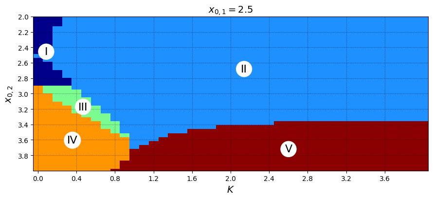

Práctica profesional · Centro de Modelamiento Matemático
Cómo una región epileptogénica recluta a una sana
En esta práctica estudié cómo se propaga una crisis epiléptica en un modelo matemático sencillo: el Epileptor reducido a dos variables, tomado de la ecuación (8) de Proix et al. (2014). Partí con una sola región, seguí con dos regiones acopladas y terminé con una red en la que las crisis pasan de un nodo a otro.
El modelo: Epileptor reducido a dos dimensiones
El Epileptor completo tiene cinco variables y tres escalas de tiempo. Promediando las oscilaciones rápidas, Proix et al. lo reducen a una variable de actividad \(x_i\) y una variable lenta de permitividad \(z_i\) por región. Las regiones se comunican solo a través de \(z\).
Ecuación (8) · \(N\) regiones
$$\begin{aligned} \dot x_i &= -x_i^3 - 2x_i^2 + 1 - z_i + I_1 \\[6pt] \dot z_i &= \frac{1}{\tau_0}\Big(h(x_i) - z_i - K\sum_{j=1}^{N}(x_j - x_i)\Big) \\[6pt] h(x_i) &= x_{0,i} + \frac{3}{1+\exp\!\big(-(x_i+0.5)/0.1\big)} \end{aligned}$$Qué controla cada parámetro
\(x_0\), excitabilidad. Desplaza la nullclina de \(z\). Bajo el valor crítico \(x_0 \approx 2.91\) no queda ningún equilibrio estable y la región entra sola en ciclos de crisis.
\(K\), acoplamiento por permitividad. Cuando una región vecina está en crisis, el término \(K(x_j - x_i)\) empuja la permitividad de la región \(i\) hacia abajo, como si su \(x_0\) efectivo disminuyera.
\(\tau_0\), separación de escalas. \(z\) evoluciona unas \(2857\) veces más lento que \(x\): el sistema es un oscilador de relajación que salta entre el estado interictal y el ictal.
En cada sección me hago la misma pregunta, con más regiones cada vez: cuándo aparece una crisis y cuándo arrastra a una región que por sí sola no la tendría.
Caso \(N=1\): una región aislada
Sin acoplamiento, el sistema es plano: \(\dot x = -x^3 - 2x^2 + 1 - z + I_1\), \(\ \dot z = \big(h(x) - z\big)/\tau_0\). Lo que pasa depende de dónde se cruzan las dos nullclinas.
Laboratorio · mueve la excitabilidad
Integración RK4 en vivo| \(x^*\) | \(z^*\) | \(\max \operatorname{Re}\lambda\) |
|---|
Actividad \(x(t)\)
Permitividad \(z(t)\)
Plano de fase \((x, z)\)
Resultados
- Para \(x_0 \in \{2.0,\ 2.5,\ 2.8\}\) hay un solo punto fijo. Está en la rama media de la cúbica y es inestable, con autovalor rápido \(\lambda\) entre \(1.2\) y \(1.3\), así que la región oscila.
- Al pasar \(x_0 = 2.91\) aparecen dos equilibrios nuevos. En \(x_0 = 3.0\) hay un nodo estable en \(x^* = -1.53\) y una silla en \(x^* = -1.11\). En \(x_0 = 3.5\) solo queda el nodo estable, en \(x^* = -1.82\).
- El período \(T\) crece de unos \(4\,850\) a más de \(20\,000\) unidades de tiempo cuando \(x_0\) se acerca al umbral. Es lo esperable en una bifurcación silla-nodo sobre ciclo invariante (SNIC), que es la que describe el paper.
- La amplitud de la oscilación casi no cambia antes del umbral. En el diagrama de bifurcación los máximos de \(x(t)\) se mantienen constantes y luego la oscilación desaparece de golpe.
| \(x_0\) | \((x^*,\ z^*)\) | Autovalores \(\lambda_{1},\ \lambda_{2}\) | Estabilidad |
|---|---|---|---|
| \(2.0\) | \((-0.4636,\ 3.7697)\) | \(1.2076,\ \ 0.0018\) | inestable |
| \(2.5\) | \((-0.5450,\ 3.6678)\) | \(1.2870,\ \ 0.0016\) | inestable |
| \(2.8\) | \((-0.6024,\ 3.5929)\) | \(1.3194,\ \ 0.0012\) | inestable |
| \(3.0\) | \((-1.5304,\ 3.0001)\) | \(-0.9046,\ -0.0004\) | estable |
| \(3.0\) | \((-1.1052,\ 3.0070)\) | \(0.7564,\ -0.0003\) | silla |
| \(3.0\) | \((-0.6558,\ 3.5219)\) | \(1.3318,\ \ 0.0008\) | inestable |
| \(3.5\) | \((-1.8186,\ 3.5000)\) | \(-2.6474,\ -0.0004\) | estable |
Resultados de las simulaciones
Gráficos y resultados, \(N=1\)
Caso \(N=2\): dos regiones acopladas
Ahora el sistema vive en cuatro dimensiones \((x_1, x_2, z_1, z_2)\). Dejé la región 1 como foco y estudié qué hace la región 2 según su excitabilidad \(x_{0,2}\) y el acoplamiento \(K\).
Sistema reducido 4D
$$\begin{aligned} \dot x_1 &= -x_1^3 - 2x_1^2 + 1 - z_1 + I_1 \\[6pt] \dot x_2 &= -x_2^3 - 2x_2^2 + 1 - z_2 + I_1 \\[6pt] \dot z_1 &= \frac{1}{\tau_0}\Big(h(x_1) - z_1 - K(x_2 - x_1)\Big) \\[6pt] \dot z_2 &= \frac{1}{\tau_0}\Big(h(x_2) - z_2 - K(x_1 - x_2)\Big) \end{aligned}$$Cinco regímenes de coexistencia
Barrí \(41 \times 40\) combinaciones de \((K, x_{0,2})\) con \(x_{0,1} = 2.5\) y aparecen los mismos cinco regímenes de la figura 5A del paper:
En el laboratorio, el punto negro sobre el mapa sigue los parámetros elegidos cuando \(x_{0,1} = 2.5\).
Laboratorio · foco + región vecina
Integración RK4 en vivoActividad \(x_1(t),\ x_2(t)\)
Permitividad \(z_1(t),\ z_2(t)\)

Resultados
- Cuando \(x_{0,1} = x_{0,2}\), el punto fijo es el sincrónico y su estabilidad es la misma que en \(N=1\): inestable en \(2.5\) y \(2.9\), estable en \(3.5\). Lo comprobé para \(K \in \{0.1,\ 0.5,\ 1.0\}\).
- Con \(K = 0\), una región con \(x_{0,2} = 3.2\) se queda en reposo. Con \(K = 1.0\) el foco la arrastra y las dos hacen crisis juntas (régimen II).
- Si \(x_{0,2} \gtrsim 3.4\) y \(K\) es grande, la región sana inhibe a la epileptogénica y ninguna hace crisis (régimen V). La frontera entre los regímenes II y V queda casi horizontal.
- El ruido en \(z\) facilita el reclutamiento. Con \(x_0 = (2.5,\ 3.5)\) y \(\sigma_x = 0.02\), la probabilidad de que la región 2 haga crisis sube con \(\sigma_z\). Para \(K = 0.6\) pasa de \(0\) a cerca de \(0.87\) en \(\sigma_z = 0.003\), y para \(K = 0.9\) es \(1\) en todo el rango.
Laboratorio y figuras
Series de tiempo \(x(t)\), \(z(t)\) y onda rectangular \(h(x(t))\)
La permitividad \(z_i\) persigue lentamente a \(h(x_i(t))\), que salta entre \(x_{0,i}\) (reposo) y \(x_{0,i}+3\) (crisis). El acoplamiento desplaza ese objetivo en \(-K(x_j - x_i)\).
Laboratorio · \(x(t)\), \(z(t)\) y \(h(x(t))\)
Integración RK4 en vivoActividad \(x_1(t),\ x_2(t)\)
Permitividad \(z_1(t),\ z_2(t)\)
Onda rectangular \(h(x_1(t)),\ h(x_2(t))\)
Mapas de calor y espacio de parámetros
Modelo con ruido (Euler-Maruyama)
Ecuación estocástica · \(i \in \{1, 2\}\)
$$\begin{aligned} dx_i &= \big(-x_i^3 - 2x_i^2 + 1 - z_i + I_1\big)\,dt + \sigma_x\, dW_i^{x} \\[6pt] dz_i &= \frac{1}{\tau_0}\big(h(x_i) - z_i - K(x_j - x_i)\big)\,dt + \sigma_z\, dW_i^{z} \end{aligned}$$Esquema de Euler-Maruyama con \(\Delta t = 0.1\) y \(T = 50\,000\): en cada paso \(\Delta W \sim \sqrt{\Delta t}\;\mathcal N(0,1)\), independiente para las cuatro variables.
La realización del ruido queda fija al cambiar \(\sigma_x\) y \(\sigma_z\), así que se ve la misma trayectoria deformarse de a poco. La curva punteada es el caso determinista \(\sigma_x=\sigma_z=0\).
Laboratorio · perturbación por ruido
Euler-Maruyama en tiempo realActividad \(x_1(t),\ x_2(t)\)
Permitividad \(z_1(t),\ z_2(t)\)
Extensión
¿Cuánto de \(N=2\) sobrevive cuando \(N\) crece?
Con acoplamiento todos con todos y \(K = c/N\), comparé poblaciones de \(N\) regiones con el caso de dos.
Grafo epileptogénico dinámico
Cada región es un nodo con su propia excitabilidad. Construí la matriz de adyacencia \(A\) a partir de \(x_0\), y los pesos \(W_{ij}(t)\) de las aristas cambian con la actividad. Eso permite ver cómo los nodos epileptogénicos se van conectando con los sanos a medida que pasa el tiempo.
Adyacencia
$$A_{ij}=\begin{cases}1 & x_{0,j} \lt x_{0,i},\ i\neq j\\ 0 & \text{en otro caso}\end{cases}$$La región \(i\) recibe de todas las más excitables que ella. Es un supuesto de modelamiento y no representa conectividad cerebral medida.
Dinámica en red
$$\dot z_i=\frac{1}{\tau_0}\Big[h_i(x_i)-z_i-K\sum_j A_{ij}(x_j-x_i)\Big]$$\(x_j\) aparece en la ecuación de \(i\): la influencia va de \(j\) hacia \(i\).
Grafo dinámico
$$W_{ij}(t)=K\,A_{ij}\,\lvert x_j(t)-x_i(t)\rvert$$Intensidad instantánea del acoplamiento; su integral es la influencia acumulada \(I_{ij}=\int_0^T W_{ij}(t)\,dt\).
Laboratorio · grafo dinámico
Simulación en vivoGrafo · grosor \(= W_{ij}(t)\) · relleno \(= x_i(t)\)
calculando…Matriz \(W_{ij}(t)\)
Secuencia de reclutamiento \(T_i\)
\(x_i(t)\) · haz clic para mover el tiempo
Resultados del experimento base \((N=10,\ K=0.1,\ \text{semilla } 42)\)
- Como \(A\) se define a partir de \(x_0\), el grado ordena los nodos igual que la excitabilidad. Por eso el nodo 3, que tiene el mayor grado de salida \((d^{out}_3 = 9)\), es también el de mayor influencia dinámica \((H^{dyn,out}_3 = 182.1)\).
- Hay que tener cuidado con la dirección de las flechas.
nx.DiGraph(A)dibuja \(i \to j\), pero en la ecuación es \(j\) quien influye sobre \(i\). Por eso comparé \(A\) con \(A^{\mathsf T}\), y el laboratorio dibuja siempre la flecha en el sentido de la influencia. - Los nodos 0 y 1, que son los focos, concentran la influencia entrante: \(H^{dyn,in} = 303.6\) y \(267.8\). En la matriz \(A\) todos los demás nodos apuntan hacia ellos.
Sobre la función \(h\) en este experimento. En el experimento base del grafo usé \(h_i(x) = x_{0,i} - 3 + 3\,\sigma\big((x-0.5)/0.1\big)\) con \(z_i(0)=0\), que es distinta de la ecuación (8). Con esa elección todas las regiones saltan a la rama alta en \(t \approx 1\) y después decaen lentamente. Por eso \(T_i = 1.0\) para los diez nodos y \(R(K) = 1\) incluso con \(K = 0\): el reclutamiento medido corresponde al transitorio inicial y no al acoplamiento. El laboratorio permite comparar las dos variantes. Con la ecuación (8) y reposo inicial sí aparece una cascada que depende de \(K\).
Trabajo pendiente. Falta completar la comparación con el modelo de campo medio, las réplicas estadísticas con varias semillas y el estudio de convergencia numérica.
Resultados de las simulaciones
Estructura, series y grafo dinámico
Profesor guía
Hice esta práctica en el Centro de Modelamiento Matemático, con Joaquín Fontbona como profesor guía.

Centro de Modelamiento Matemático · DIM, Universidad de Chile
Joaquín Fontbona
Su investigación se centra en probabilidad y procesos estocásticos, teoría ergódica y modelamiento estocástico aplicado a la física y la biología. También trabaja con estadística y aprendizaje automático para procesamiento de señales, teledetección y minería de datos.
Agradezco al profesor Fontbona por proponer el problema y por el tiempo que dedicó a guiar este trabajo.
Ver perfil en IDIA · U. de Chile- Afiliaciones
- Investigador asociado, Centro de Modelamiento Matemático.
Profesor Asociado, Departamento de Ingeniería Matemática, Universidad de Chile. - Formación
- PhD en Matemáticas, Université Pierre et Marie Curie (Paris VI), 2004.
Ingeniero Civil Matemático, Universidad de Chile, 1999. - Contacto
- fontbona@dim.uchile.cl